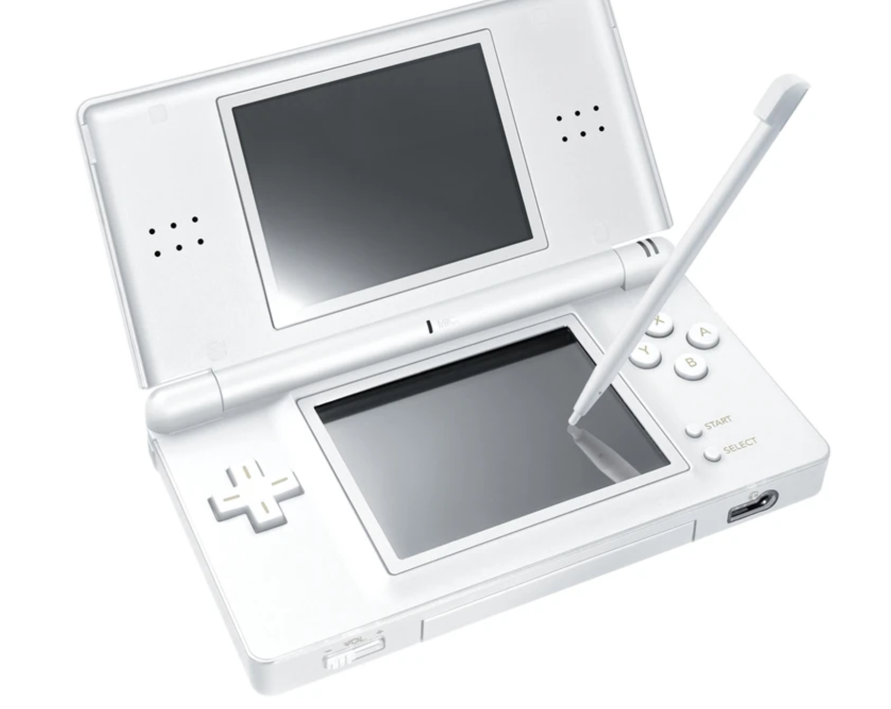

The Original DS
The Ds was a staple in Nintendos console lineup as many people adored the console. The Ds had many varients that came out through the years but the original is the one that started it all. The Ds was a small handheld device with 2 screens that where foldable like a book. The console also sported a touchscreen on the lower screen that was intended to be used with a stylus that was found on the inside of the console. The console did not sport a joystick at the time and only had a D-Pad intead.More info here.